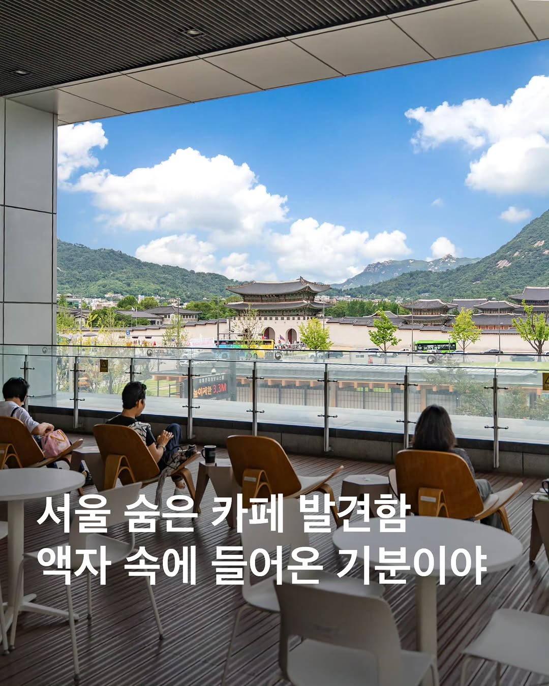
01
반응 4,498
박물관에서 서울 한 컷
대한민국역사박물관 3층에서 광화문광장·경복궁·북악산을 한눈에 보는 도심 코스예요.
운영시간은 방문 전 박물관 공식 채널 확인
인스타그램에서 보기 ↗아이 손 잡고,
반응 좋은 곳부터.
한국관광공사와 개인 여행·지역생활 계정 5곳에서 2026년 9월 이후 공개된 가족 나들이 관련 게시물 58건을 확인하고, 비교 가능한 30건을 공개 반응점수(좋아요+댓글×5) 순으로 정리했습니다. 인스타그램 전체 순위는 아닙니다.

대한민국역사박물관 3층에서 광화문광장·경복궁·북악산을 한눈에 보는 도심 코스예요.
운영시간은 방문 전 박물관 공식 채널 확인
인스타그램에서 보기 ↗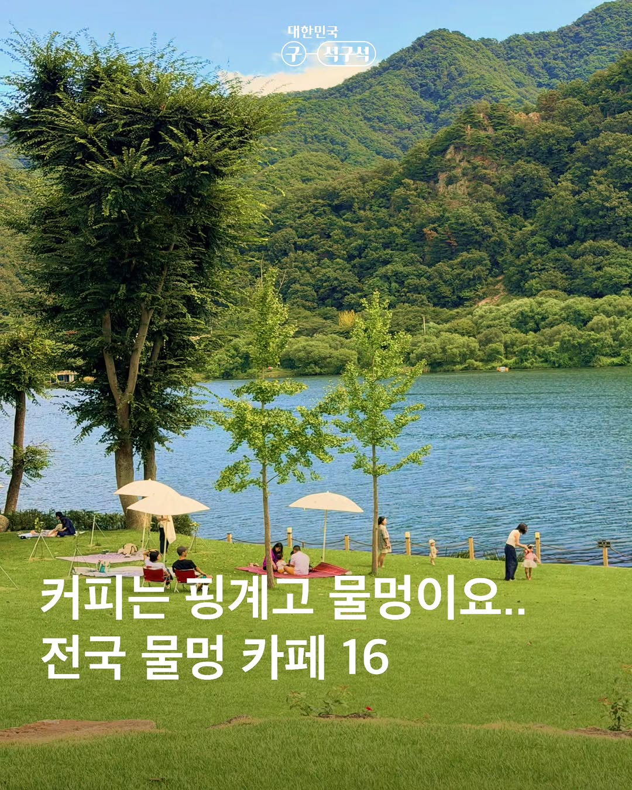
호수·바다·강을 바라보며 쉬기 좋은 전국 물멍 카페 16곳을 한 번에 모은 저장형 게시물이에요.
어린이 시설·노키즈 여부는 매장별 확인
인스타그램에서 보기 ↗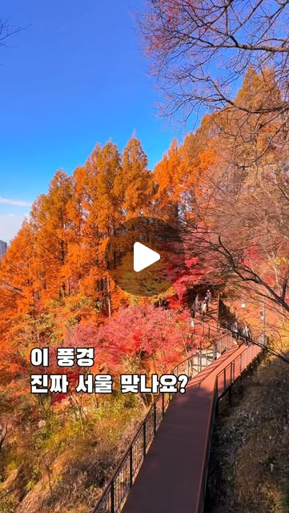
메타세쿼이아 숲과 전망다리를 걷는 남산 하늘숲길 가을 산책 코스예요.
게시물 사진은 이전 계절 촬영본 · 현재 단풍 현황 확인
인스타그램에서 보기 ↗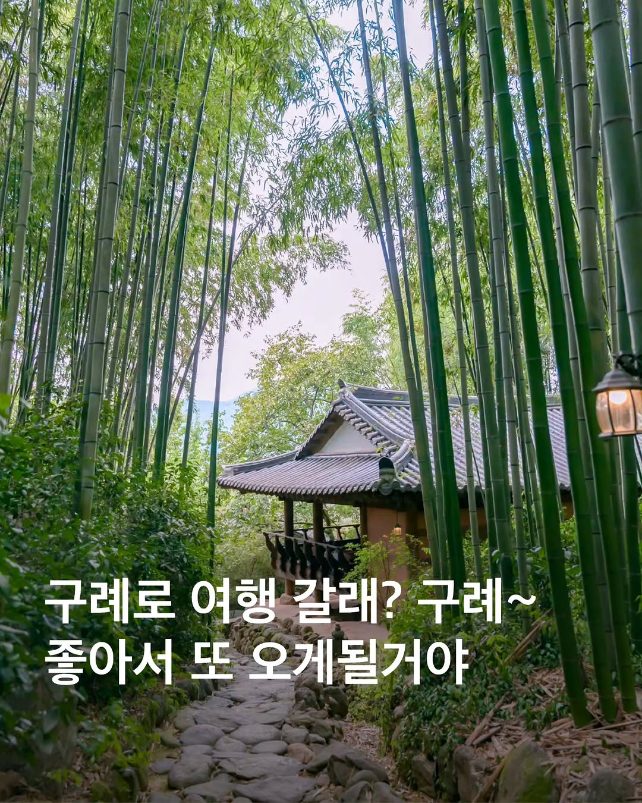
한옥 정원 쌍산재, 천은사, 작은 책방과 빙수까지 느린 하루에 어울리는 구례 코스예요.
휴무일이 서로 달라 동선별 확인 필요
인스타그램에서 보기 ↗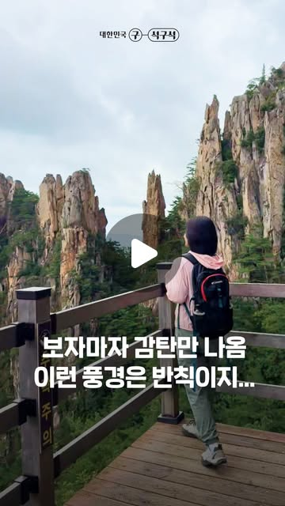
무릉계곡에서 약 1시간 오르면 기암절벽과 베틀바위 전망이 펼쳐지는 등산 코스예요.
유아보다 등산 경험 있는 초등 고학년 이상 권장
인스타그램에서 보기 ↗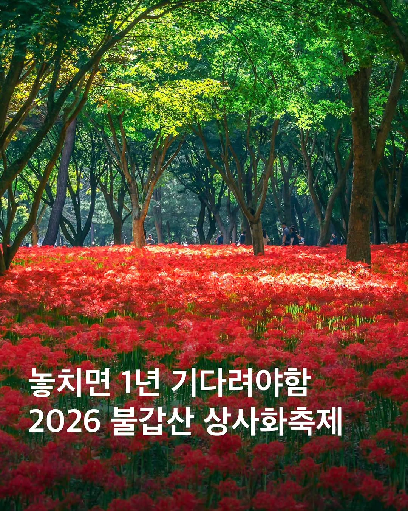
상사화 꽃길과 공연·전시·체험, 야간경관을 함께 소개한 영광 불갑산 축제 게시물이에요.
2026 행사는 9월 27일 종료
인스타그램에서 보기 ↗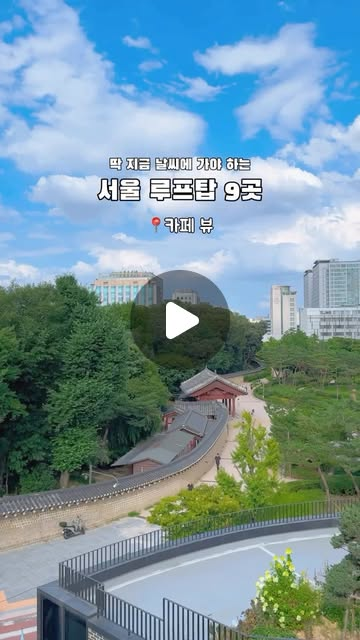
한강·궁궐·폭포·도심 야경을 만나는 서울 루프탑 아홉 곳을 모았어요.
어린이 출입·안전난간·운영시간은 장소별 확인
인스타그램에서 보기 ↗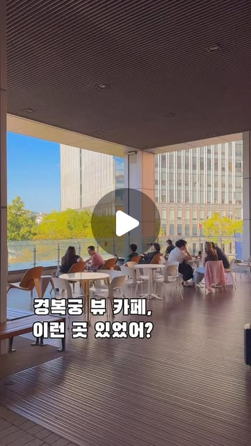
박물관 전시, 3층 카페, 8층 옥상정원을 잇는 광화문 반나절 코스예요.
박물관·카페 운영시간을 방문 전 확인
인스타그램에서 보기 ↗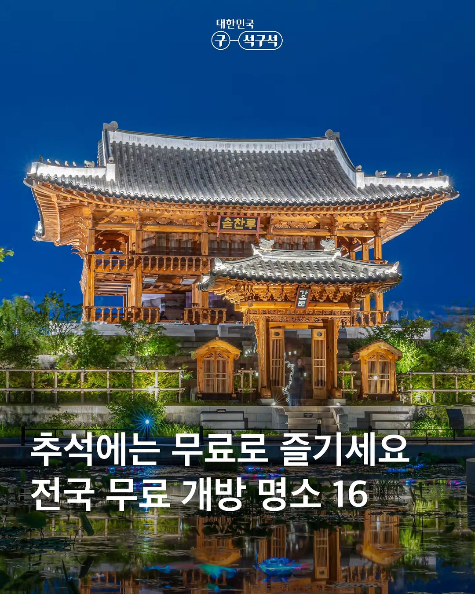
궁궐·박물관·수목원 등 추석 연휴 무료 개방 명소를 모은 가족 나들이 정보예요.
연휴 한정 정보 · 현재 운영 여부 재확인
인스타그램에서 보기 ↗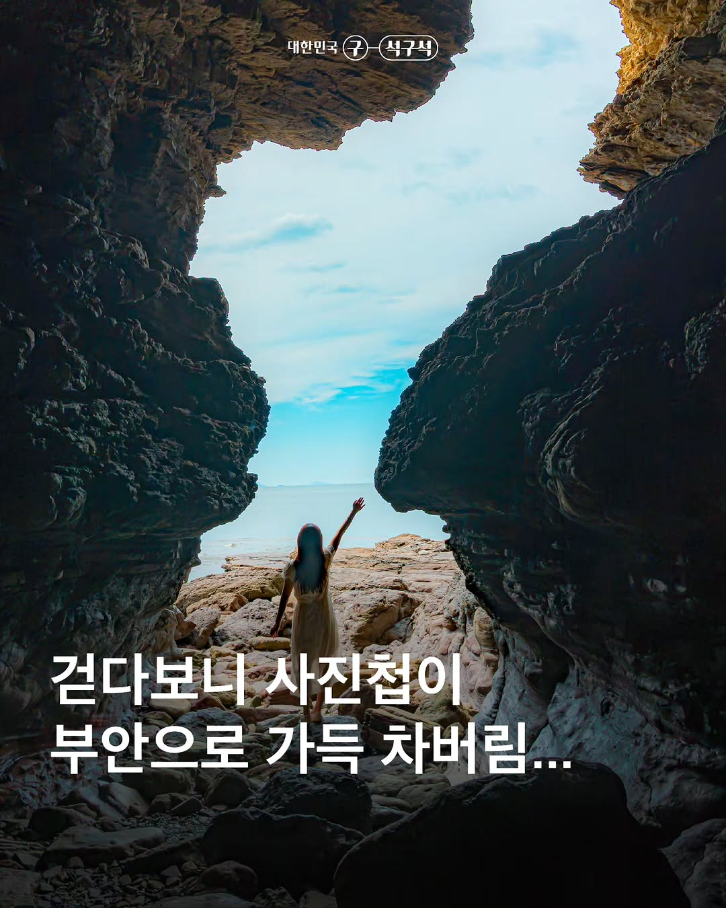
채석강 해식동굴, 잔디밭, 곰소염전과 바다 카페까지 분위기가 다른 네 장소를 묶었어요.
채석강은 물때와 해안 안전 확인 필수
인스타그램에서 보기 ↗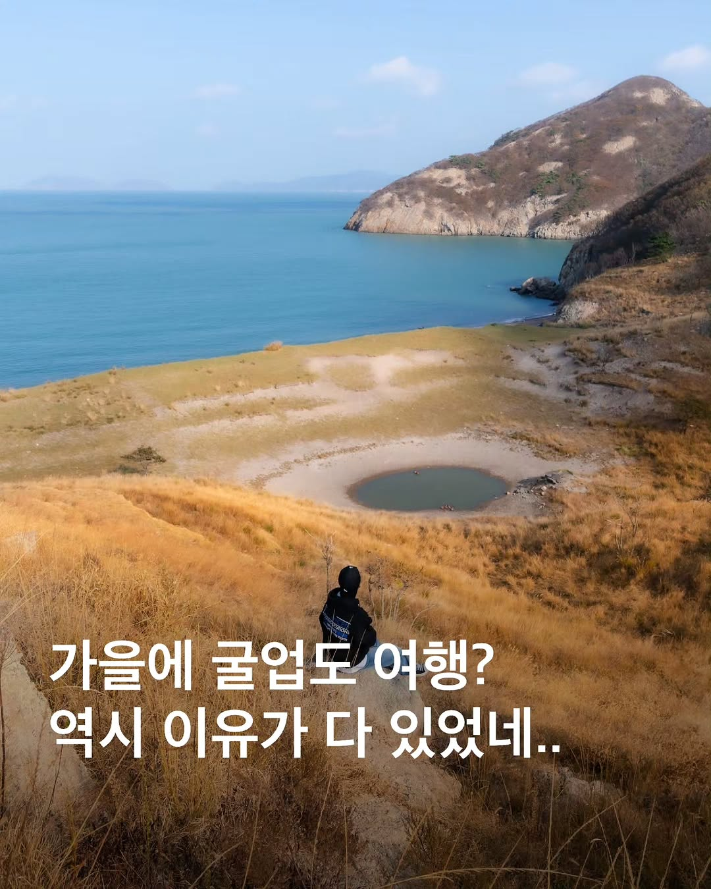
바닷바람과 초원, 황금빛 억새가 만나는 굴업도 가을 풍경을 담은 섬 여행이에요.
여객선·숙박 예약과 기상 확인 필요
인스타그램에서 보기 ↗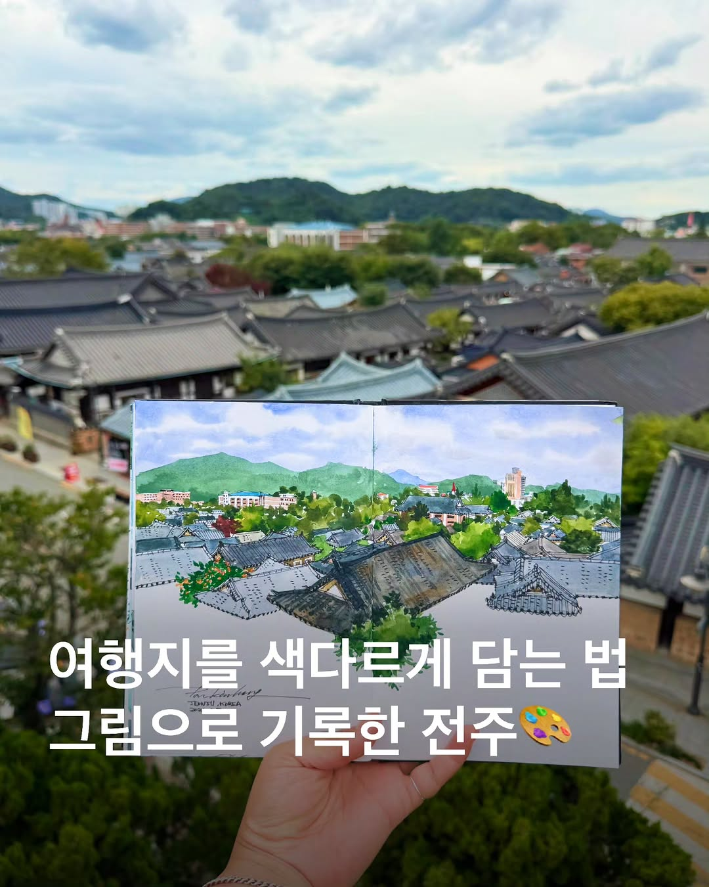
한옥마을과 한벽터널을 천천히 관찰하고 그림으로 남기는 여행 놀이를 제안해요.
스케치북과 색연필을 챙기면 만족도 상승
인스타그램에서 보기 ↗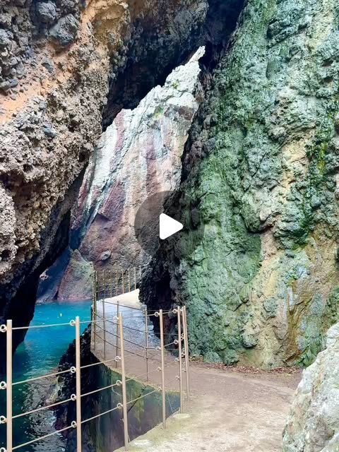
독도·관음도·대풍감·나리분지와 해안 산책을 엮은 울릉도 3박 4일 코스예요.
배편·기상·해안 활동 안전을 사전 확인
인스타그램에서 보기 ↗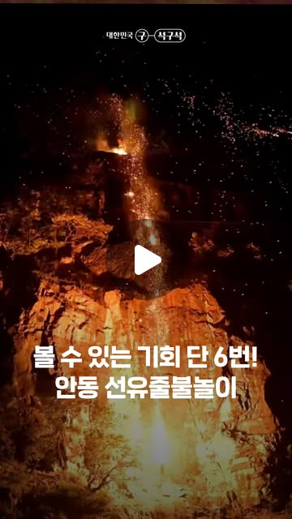
선조들의 전통 불꽃놀이인 하회선유줄불놀이를 밤 풍경과 함께 즐기는 체험이에요.
사전예매·야간 추위·어린이 귀 보호 확인
인스타그램에서 보기 ↗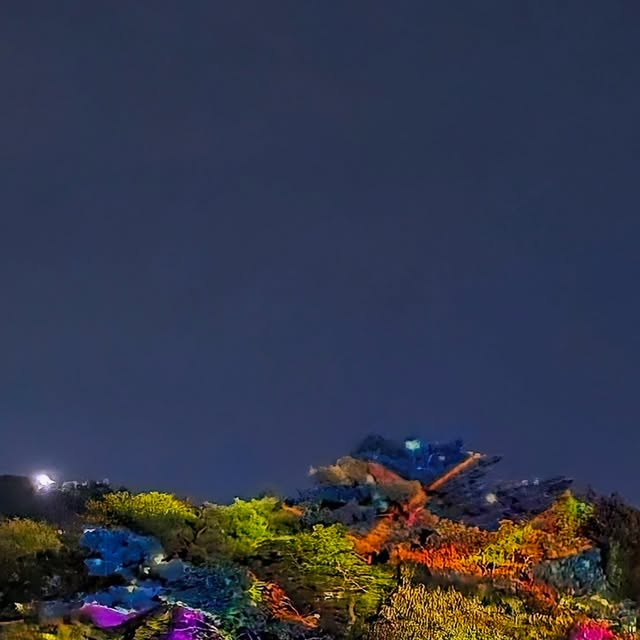
춘당지의 빛·물·자연을 엮은 야간 미디어아트 물빛연화 소식이에요.
7세 이상 · 사전예약 · 10월 7일~11월 1일
인스타그램에서 보기 ↗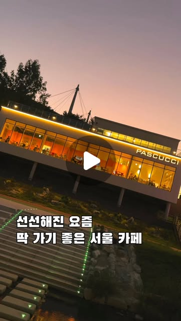
불광천 산책 뒤 노을과 야경을 보는 월드컵수변카페 코스예요.
루프탑 어린이 안전과 매장 운영시간 확인
인스타그램에서 보기 ↗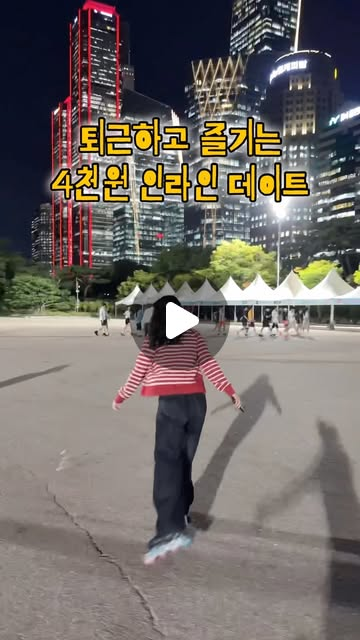
여의도공원 문화의마당에서 인라인을 빌려 가볍게 달리는 도심 체험이에요.
보호장비·대여 운영 여부·어린이 사이즈 확인
인스타그램에서 보기 ↗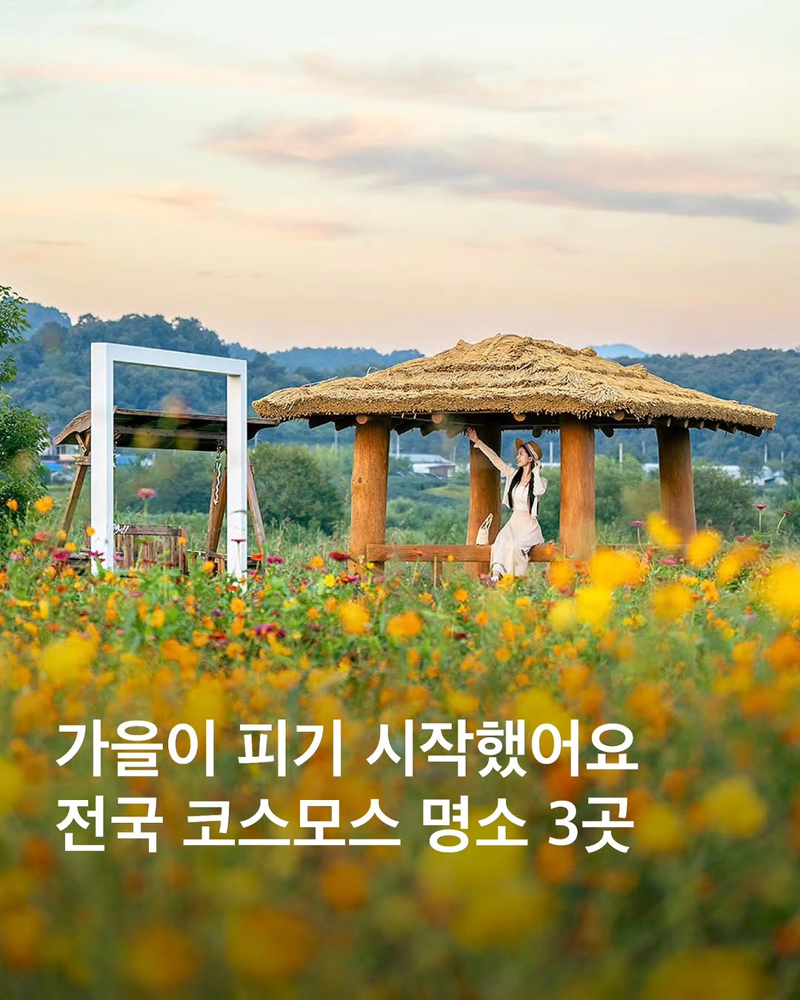
연천 댑싸리정원, 안성팜랜드, 올림픽공원 들꽃마루를 묶은 가족 산책 코스예요.
꽃밭 출입선 준수 · 개화 현황 확인
인스타그램에서 보기 ↗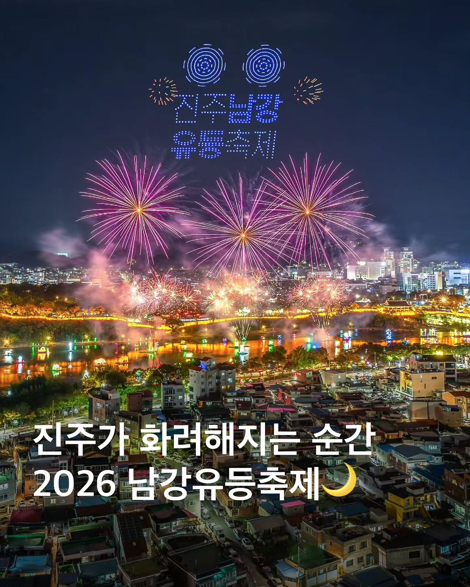
남강을 수놓는 유등과 불꽃놀이, 다채로운 체험을 함께 즐기는 가을 야간 축제예요.
2026년 10월 3–18일 · 일부 체험 유료
인스타그램에서 보기 ↗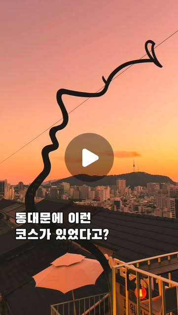
카페·우동·성곽길·노을 골목·루프탑을 도보로 잇는 하루 코스예요.
성곽길 경사와 야간 귀가 동선 확인
인스타그램에서 보기 ↗조선시대 신분을 뽑고 엽전을 모아 체험과 먹거리를 즐긴 김제 국가유산 야행 후기예요.
2026 김제 서포터즈 콘텐츠 · 해당 행사는 종료
인스타그램에서 보기 ↗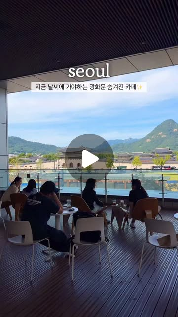
대한민국역사박물관 3층 카페에서 경복궁을 바라보는 가벼운 나들이예요.
가격과 운영시간은 방문 전 재확인
인스타그램에서 보기 ↗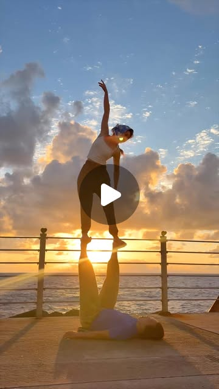
반려견과 함께 자연에서 캠핑과 교류를 즐긴 고성 펫스카우트 행사 기록이에요.
차기 개최 여부·반려동물 참가조건 별도 확인
인스타그램에서 보기 ↗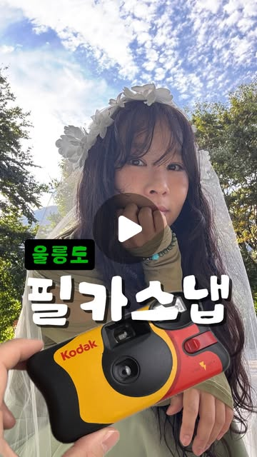
울릉도에서 만난 여행자와 주민이 필름카메라로 남긴 따뜻한 여행 기록이에요.
개인 스냅 기록이며 구체적 여행 동선은 원문 참고
인스타그램에서 보기 ↗밤배로 이동하는 울릉크루즈 자체를 여행처럼 즐긴 짧은 후기예요.
운항일·객실·멀미 대비·기상 확인
인스타그램에서 보기 ↗가을 가족여행에서 부모님과 함께 신어본 걷기용 신발 체험 콘텐츠예요.
광고 콘텐츠 · 제품 효능은 개인 경험이며 구매 전 별도 비교
인스타그램에서 보기 ↗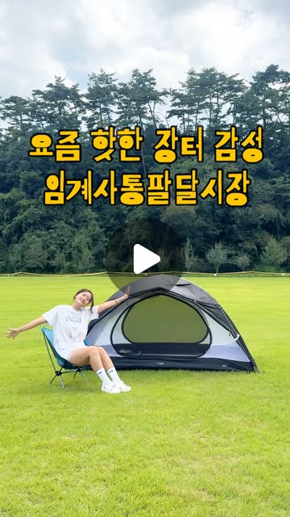
시장 캠핑에 사과빵·떡 만들기·버스킹·바비큐를 더한 지역 체험 후기예요.
제작지원 콘텐츠 · 다음 행사 일정 별도 확인
인스타그램에서 보기 ↗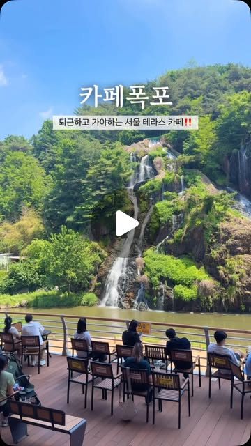
홍제천 폭포를 바라보며 테라스에서 쉬는 카페 나들이예요.
물가 어린이 안전과 혼잡 시간 확인
인스타그램에서 보기 ↗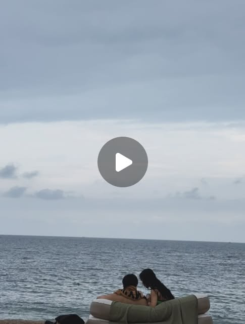
천진·아야진·청간 해변을 현지인의 늦여름 시선으로 묶은 고성 바다 기록이에요.
해수욕장 운영 종료 뒤 안전요원 부재 가능 · 입수 주의
인스타그램에서 보기 ↗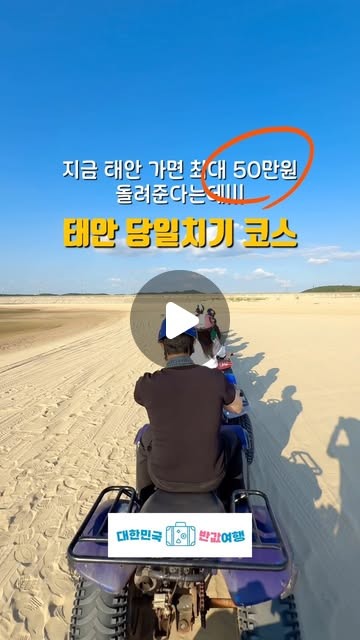
청산수목원·파도리·뭍닭섬·ATV와 로컬 먹거리를 묶은 태안 지원 여행 코스예요.
정부 제작지원 · 환급 조건과 신청 가능 여부 공식 채널 확인
인스타그램에서 보기 ↗